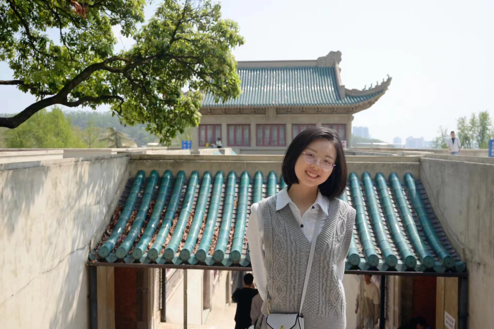
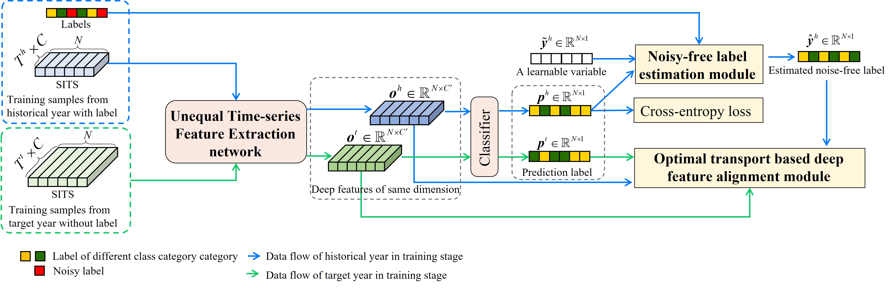
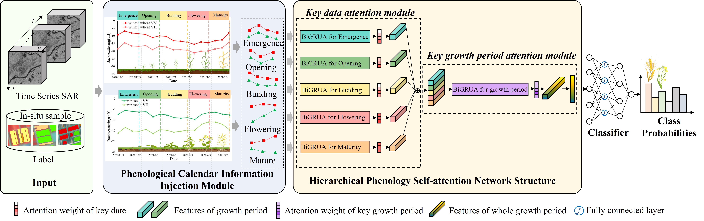
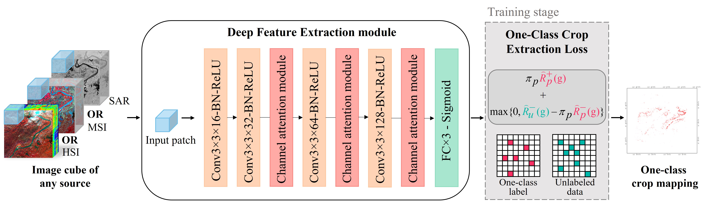
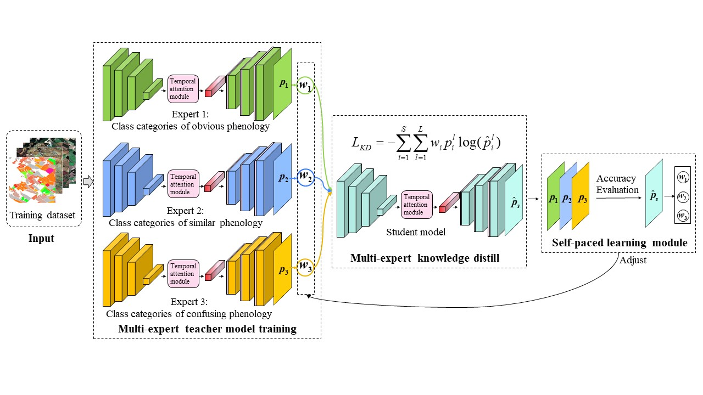
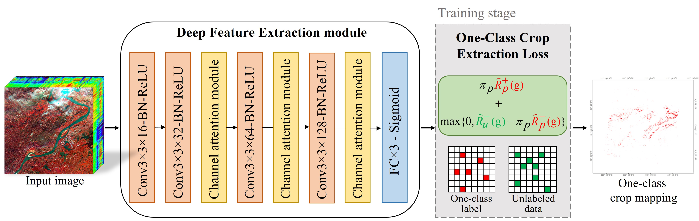

|  | Lei Lei (雷蕾) |
Journals:
|  |
CROPUP: Historical products are all you need? An end-to-end cross-year crop map updating framework without the need for in situ samples. Lei Lei, Xinyu Wang, Liangpei Zhang, Xin Hu, and Yanfei Zhong Remote Sensing of Environment, (RSE), 2024, Accept. (SCI Q1 TOP, IF=11.1 ) An end-to-end crop map updating framework is proposed to address the requirement of in-situ sample for crop map by automatically correcting the noisy label in historical product and aligning the cross-year features, which has been validated in the Corn Belt, U.S. for long-term and multi-scene crop map updating. |
|  |
PhenoCropNet: A phenology-aware-based SAR crop mapping network for cloudy and rainy areas. IEEE Transactions on Geoscience and Remote Sensing. Lei Lei, Yanfei Zhong, Xinyu Wang, and Liangpei Zhang IEEE Transactions on Geoscience and Remote Sensing, (TGRS), 2024, Accept. (SCI Q1 TOP, IF=7.5 ) A phenology-aware-based SAR crop mapping network is proposed for cloudy and rainy area based on the hierarchical phenological self-attention network to address the problem of traditional methods that depends on experts’ knowledge for feature design and could hardly differentiate crop with similar phenology. |
|  |
DOCC: Deep one-class crop classification via positive and unlabeled learning for multi-modal satellite imagery. Lei Lei, Xinyu Wang, Yanfei Zhong, Hengwei Zhao, Xin Hu, and Chang Luo International Journal of Applied Earth Observation and Geoinformation, (JAG), 2021, 105: 102598. (SCI Q1 TOP, IF=7.6 ) A one-class crop classification method is proposed for crop mapping with only samples of target crop to deal with the time-consuming and labor-intensive labelling task of multiple class types, which has been validated in Jianghan Plain for main staple crop extraction. [Paper] |
Conferences:
|  |
A multi-level fine-grained crop classification method based on multi-expert knowledge distill. Lei Lei, Yang Pan, Xinyu Wang, Yanfei Zhong, and Liangpei Zhang Proceeding of the IEEE International Geoscience and Remote Sensing Symposium (IGARSS 2024), 2024. (EI) [Paper] |
|  |
[2] HYBRID VISION TRANSFORMER MODEL FOR HYPERSPECTRAL IMAGE CLASSIFICATION Lei Lei, Xinyu Wang, Hengwei Zhao, Xin Hu, and Chang Luo, Yanfei Zhong Proceeding of the IEEE International Geoscience and Remote Sensing Symposium (IGARSS 2021), 2021. (EI) [Paper] |